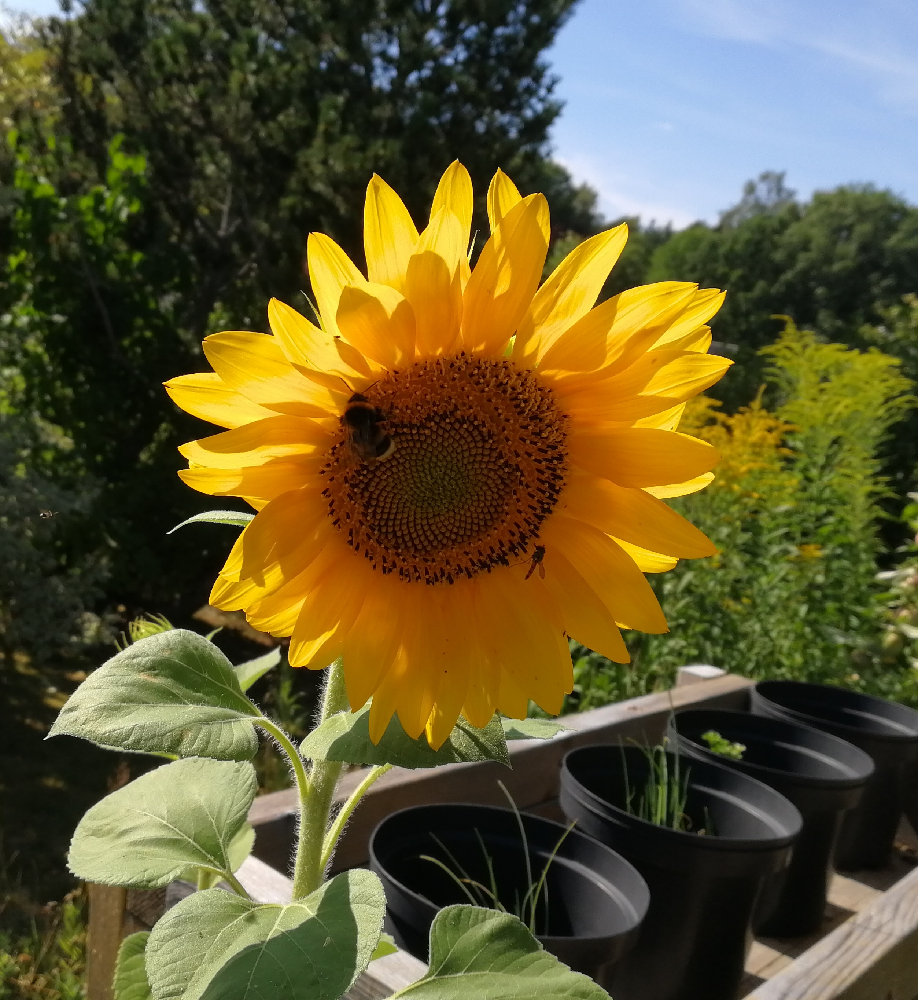

Solros
Solros (Helianthus annuus) är en art inom familjen korgblommiga växter. Den har upp till 3 meter höga stänglar
med gula blommor. Växten som har sitt ursprung i södra och sydöstra USA odlas över stora delar av världen som prydnadsväxt
eller för kommersiell framställning av solrosolja och solrosfrön (Wikipedia 2019).
